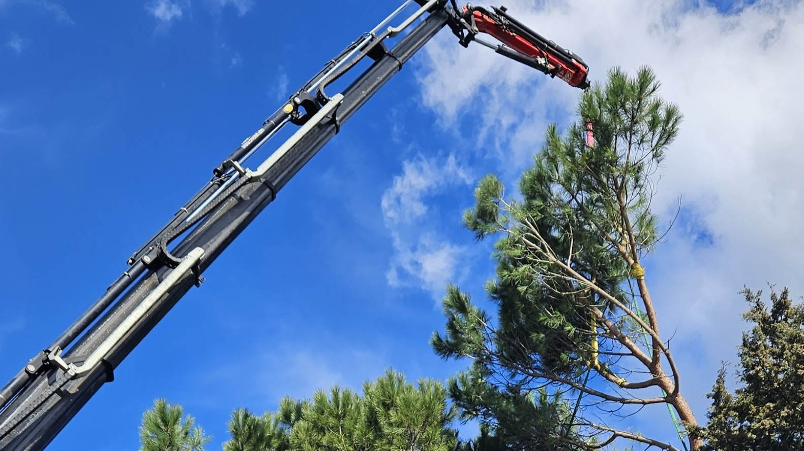

Esperienza, studio e cura del dettaglio.
Cosa fa alla pianta e cosa fa a chi ci passa sotto
La processionaria è un lepidottero che passa l'inverno allo stadio larvale dentro nidi bianchi e sericei, costruiti in punta ai rami dei pini e, in alcune situazioni, dei cedri. Si vedono bene proprio nella stagione fredda, quando intorno la chioma è più rada: sembrano batuffoli di ovatta appesi.
Il danno alla pianta è la defogliazione. Le larve si nutrono degli aghi e possono spogliare rami interi, in alcuni casi buona parte della chioma. Un pino defogliato di norma non muore per quello, ma perde una stagione di crescita e arriva indebolito a tutto il resto: siccità, altri parassiti, patogeni che su una pianta in forze non avrebbero avuto spazio.
Il problema più serio però non riguarda l'albero. Le larve sono coperte di peli urticanti sottilissimi, che si staccano con facilità e provocano reazioni cutanee, agli occhi e alle vie respiratorie nelle persone, e reazioni molto più gravi negli animali. È questo che rende la processionaria una questione di sicurezza dello spazio, non solo di salute della pianta. Come per ogni altro intervento fitosanitario, il primo passo resta riconoscere con cosa si ha a che fare.

Il ciclo dei nidi
La finestra in cui si interviene
La rimozione dei nidi ha una finestra precisa, e cade nei mesi freddi. È il periodo in cui le larve sono raccolte dentro il nido, quindi togliere il nido significa togliere la colonia intera in un'operazione sola.
Mesi freddi
Le larve sono raccolte nel nido: togliere il nido significa togliere la colonia intera.
Fine inverno
Con le prime giornate miti le larve escono in fila lungo il tronco e scendono a terra.
Dopo la discesa
Il nido è vuoto e il problema si è spostato in basso, dove il contatto è più probabile.
Ogni anno, stessa stagione
Un pino che ha avuto nidi si guarda quando sono visibili e raggiungibili, non quando danno fastidio.
Il nido, anche vuoto e anche caduto da solo, resta carico di peli urticanti a lungo.
Perché il nido non si tocca

- Non scuotere il ramo che porta il nido.
- Non colpirlo né tirarlo giù con un attrezzo.
- Non bruciarlo sulla pianta.
- Non lasciare passare persone e animali sotto la chioma.
- Non salire su una scala per arrivarci.
Davanti a un nido la reazione istintiva è liberarsene subito, con quello che si ha. È esattamente la mossa da non fare, e il motivo è il modo in cui i peli si comportano.
I peli urticanti sono leggerissimi e si staccano da soli. Scuotere il ramo, colpire il nido o tirarlo giù con un attrezzo li disperde nell'aria intorno, e arrivano su pelle e occhi di chi sta sotto senza che ci sia stato alcun contatto con i bruchi. Bruciare il nido sulla pianta fa la stessa cosa in peggio: li manda in alto con il fumo, su un raggio molto più ampio.
La rimozione vera si fa raggiungendo il nido dall'alto, con protezioni adeguate, e chiudendolo prima di staccarlo. Non è un lavoro che si improvvisa da una scala.
FAQ
Domande sulla processionaria
Il cane è passato sotto un pino con i nidi: cosa devo guardare?
I segnali arrivano in fretta e riguardano bocca e muso: il cane si lecca in modo insistente, saliva abbondante, lingua o labbra gonfie, tentativi di grattarsi il muso. Sono situazioni che vanno portate subito da un veterinario, non tenute d'occhio.
Sul lato della pianta, la cosa utile è impedire l'accesso a quell'area finché i nidi ci sono e finché quello che è caduto non è stato tolto. La zona sotto la chioma è il punto in cui il rischio è più alto, e resta tale anche quando sull'albero non si vede più niente.
Se il nido è troppo in alto perché arrivi una piattaforma, come si toglie?
Si sale. Quando l'accesso a terra non c'è, il mezzo non entra o l'altezza è fuori portata, il nido si raggiunge in fune, con l'operatore che si posiziona vicino al punto di lavoro.
È anche la tecnica che permette di lavorare senza scuotere la pianta e senza attraversare tutta la chioma per arrivare in punta, che è esattamente quello che va evitato.
Tolto il nido, l'anno dopo torna?
Può tornare, e nessuno può garantire il contrario. Le farfalle arrivano in volo da fuori e depongono dove trovano la pianta ospite: togliere i nidi risolve la colonia presente, non rende il pino inattaccabile.
Quello che cambia davvero è il controllo. Un pino guardato ogni anno nella stagione giusta si affronta quando i nidi sono pochi e raggiungibili; uno lasciato solo si ritrova con una situazione più grande e più difficile da gestire.